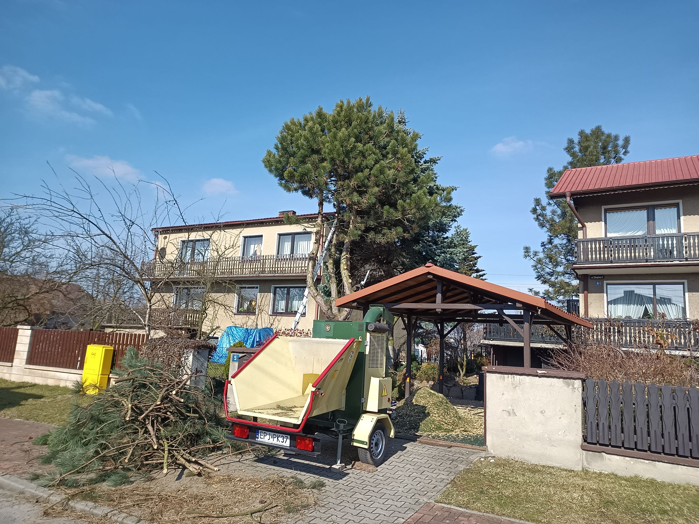
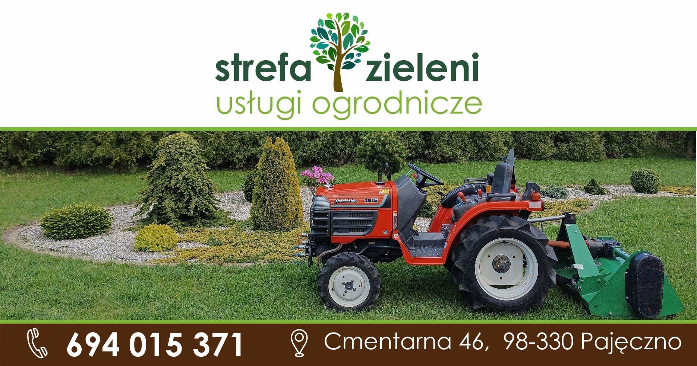
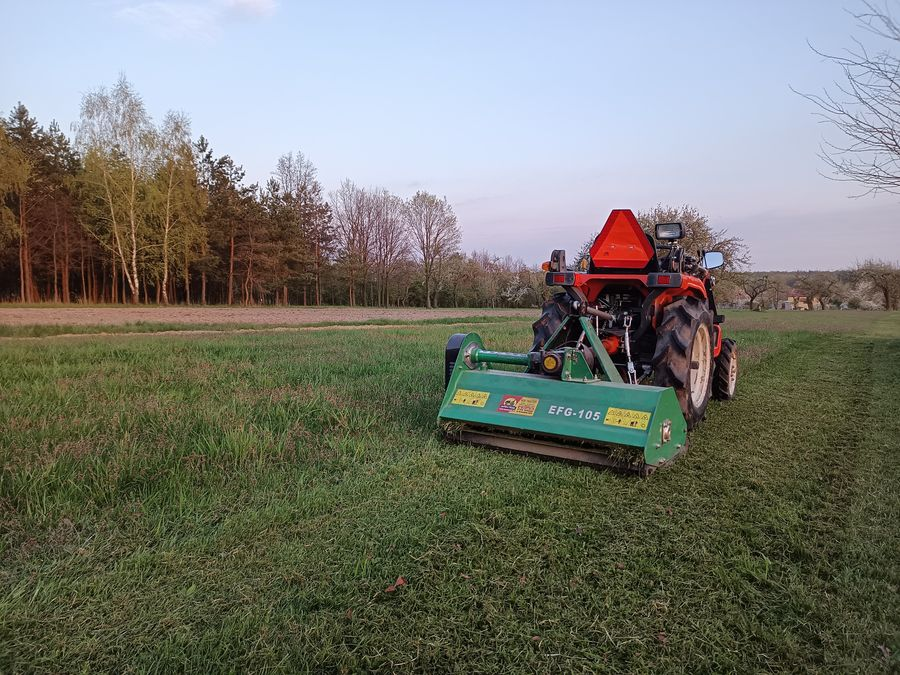
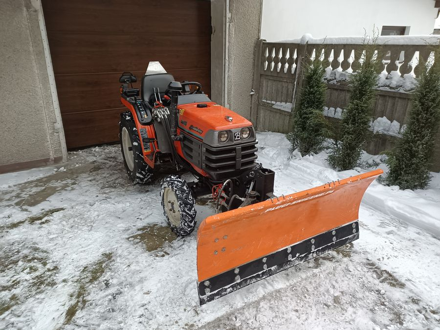
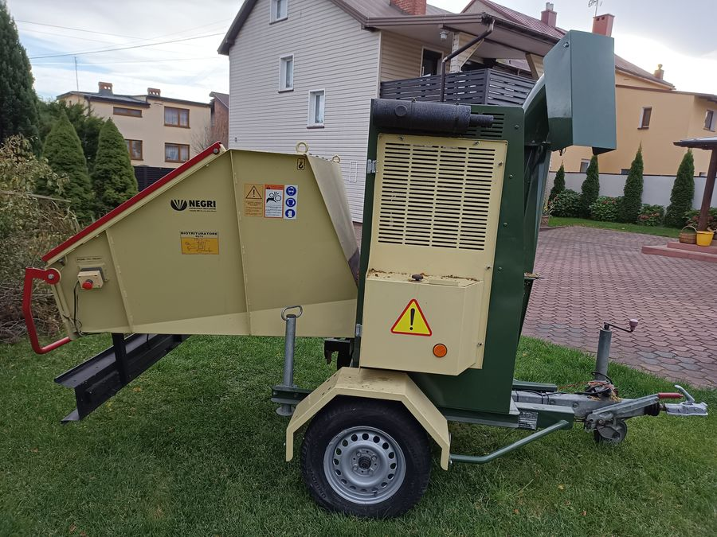

Zaczęło się od dwóch pił
Strefa Zieleni to Szymon Browarski i czteroosobowa ekipa z Pajęczna. Od pięciu lat dbamy o działki, ogrody i tereny w okolicy.
Od transportu do zieleni
Wcześniej zajmowałem się transportem. W pewnym momencie stwierdziłem, że czas coś zmienić, i postawiłem na to, co zawsze lubiłem: prace gospodarcze przy drzewach, przycinanie i ścinanie.
Zaczęło się od dwóch pił i małego traktorka do koszenia trawy. Dziś mamy rębak Negri, ciągnik z kosiarką bijakową, podnośnik, pług do odśnieżania i cztery osoby, które robią wszystko od A do Z: od oględzin, przez robotę, po sprzątanie.
Szymon Browarski, właściciel

Stała współpraca, nie jednorazowe zlecenia
Chcemy, żeby klient zadzwonił do nas znowu za rok. Dlatego pracujemy porządnie i jesteśmy pod telefonem.

Sezon zielony
Koszenie, wycinka i przycinka, ogrody i sady, czyszczenie działek pod budowę.

Sezon zimowy
Ten sam ciągnik jeździ z pługiem. Odśnieżamy podjazdy, place i drogi dojazdowe.

Mówimy od razu, czego nie robimy
Nie bierzemy wycinek alpinistycznych, czyli bardzo wysokich drzew, do których trzeba wchodzić na linach. Wolimy powiedzieć to przy pierwszym telefonie, niż zawieść na miejscu.
- Cenę podajemy po oględzinach, przed pracą
- Do 10 km wycena i dojazd gratis
- Własny sprzęt spalinowy, bez prądu i wody na miejscu
- Wystawiamy faktury
Ocena 5,0 z 22 opinii w Google
Jestem bardzo zadowolony z usług Strefy Zieleni. 2 dni pracy z piłą i rębakiem zrobiło robotę w zaniedbanym ogrodzie. Firma solidna, elastyczna i z dobrą ceną do jakości usług.
Zdecydowanie polecam. Bardzo rzetelnie i szybko wykonana praca, bardzo dobra komunikacja i współpraca z inwestorem.
Teren wyrównany glebogryzarką separacyjną idealnie. Dziękuję jeszcze raz.
Policzymy Państwa teren
Do 10 km od Pajęczna przyjeżdżamy obejrzeć teren i wyceniamy bez opłat. Dalej, do 40 km, też dojeżdżamy, a koszt dojazdu mówimy od razu przez telefon.